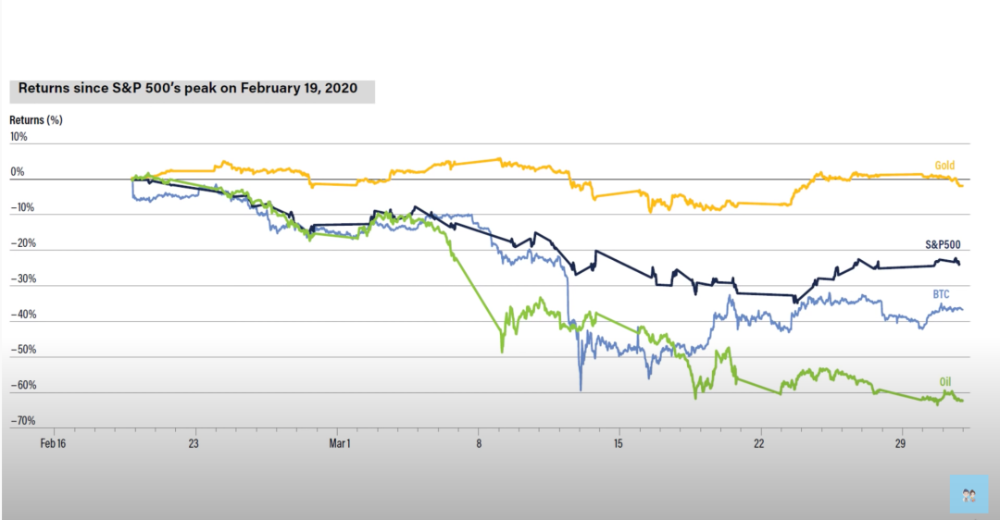
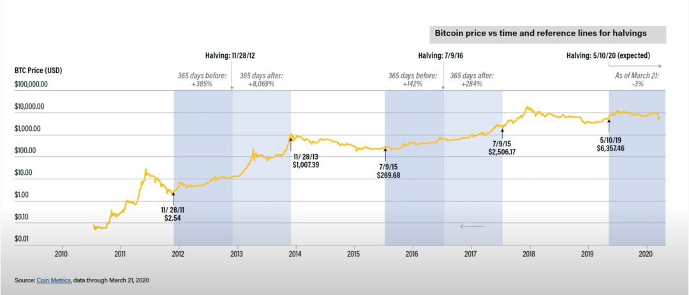
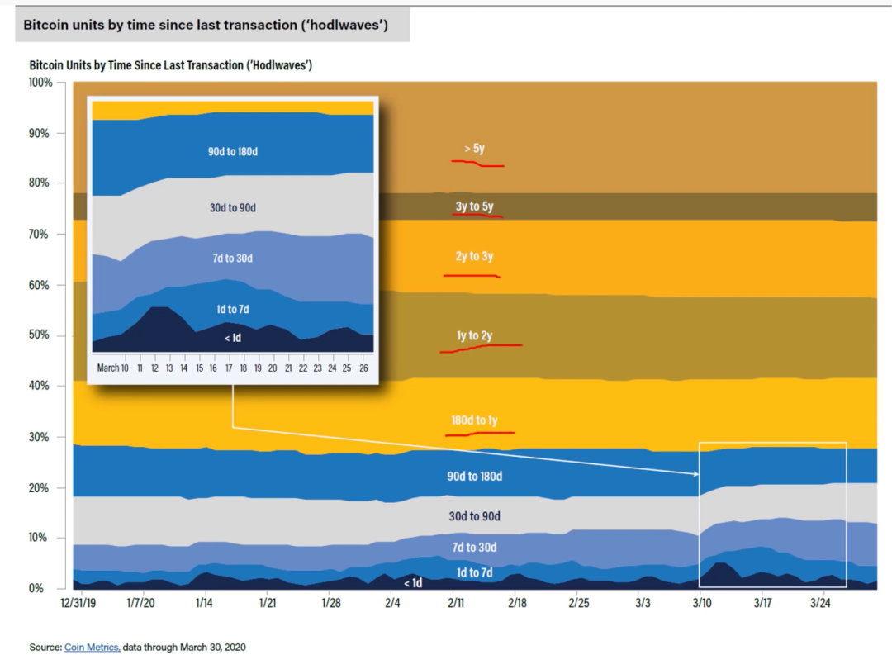
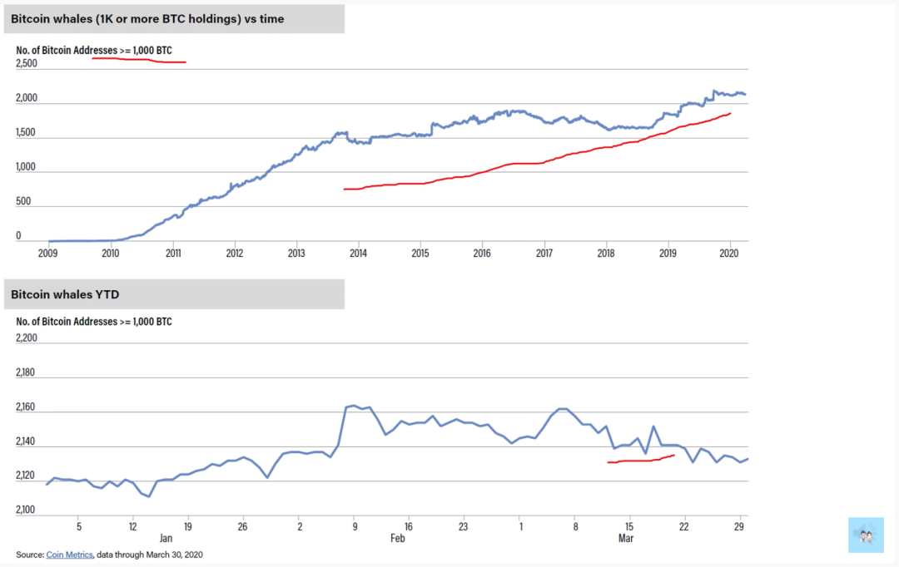

--------点击蓝字关注我--------
微信号：gaoxiaomao88
--------点击蓝字关注我--------
微信号：gaoxiaomao88
前不久比特币减半了，贝版也出了好几期视频，专门讲比特币减半以后会如何走。最近我也稍微闲下来了几天，就稍稍研究了一下，也觉得他说的有点道理。今天这篇文章就聊聊他几个视频里都说了什么。
今年3月初股市暴跌的时候，比特币也跟着一路狂跌，完全失去了避险资产的样子。不过当时黄金也在跌，只不过跌得少一点，而作为电子黄金的比特币相对来说波动性更加大一点，所以也就跌得更加凶一点。最近一段时间股市慢慢回来了，比特币也就慢慢也回到了之前一直盘桓的8000-10000美金这个区间。

一般来说，比特币减半之前会稍稍上涨一些，因为大家都有一个好的预期，一旦真的减半以后，似乎这个预期就破灭了，币价会跌一波，之前比特币的两次次减半都遵循这个规律，如下图所示。

另外一个规律是一般比特币减半之后大约1年多以后，会进入牛市，之前的两次都是如此。不过具体什么时候进入牛市并不好说，像是2012年那次是减半后大约1年以后，涨了80倍，2016年那次减半后过了近两年才真正进入牛市，不过那个之前也涨得不错，有上涨了三倍。
根据贝版的理论，这是因为减半以后供需平衡被打破了，新出的币少了，但是买的人还是那么多，一开始还看不出来，但是随着时间的推移慢慢平衡会被打破，直至进入牛市。尤其是随着Square和Grayscale上购买新挖出来的比特币的量不断增加（最近2020第一季度，占比超过50%），未来市场对于比特币的需求量会越来越高。
截至目前，比特币还是处于一个小幅微调的状态，并没有大的波动，新韭菜也只是小额进入。甚至在之前3月初那一波暴跌中，不少新韭菜还被洗了出去。从下图中可以看出，绝大部分的超过180天的持有者并不会随意地改变他们的仓位，在3月10日的暴跌中，绝大部分洗出去的都是持有90-180天这个区间的投资者。

从下表的数据也可以看出，持有超过1000个比特币的地址数实际上是不断增加的，说明大户其实是不断在增加持仓数量的。

大家感兴趣的话可以去他的Youtube频道看他的视频，搜“贝版”就可以找到。我觉得讲得很到位，也有很多详实的数据。点击左下角阅读原文也可以查看，不过需要你的网络可以看Youtube。
注：本文不构成任何投资建议，区块链资产是一个极其高风险的投资领域，不建议任何人在没有了解清楚的情况下参与。

扫描二维码关注我~